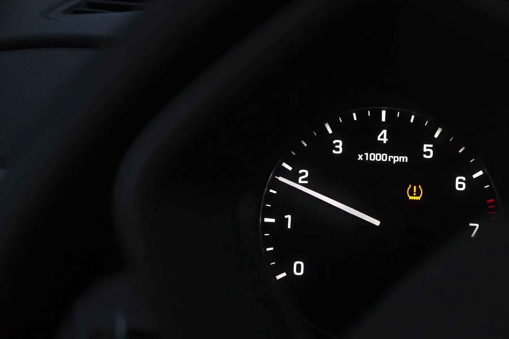

WHAT'S INCLUDED
TPMS REPLACEMENT, RELEARN & PROGRAMMING.
- TPMS sensor replacement requests
- TPMS relearn requests
- TPMS programming requests
- Vehicle and location details captured with the service request
TIRE SERVICES
Tires 4 Less offers TPMS sensor replacement, relearn and programming. If the tire-pressure warning light stays on or a sensor has been replaced, choose a shop and send the vehicle details so the team can confirm the appropriate TPMS service.
Choose the shop location first and submit the TPMS service request with your vehicle details.
WHAT'S INCLUDED
Request TPMS sensor replacement, relearn or programming with the vehicle and warning-light details.
SERVICE DETAILS
TPMS service can involve replacing a sensor, having the vehicle relearn sensor information or programming a compatible sensor for the vehicle. The exact procedure depends on the vehicle and the sensor situation. A warning light does not automatically prove that the sensor itself is bad, because tire pressure, tire condition and the TPMS system can all be part of the problem.
SERVICE DETAILS
Include the vehicle year, make and model, what the TPMS warning light is doing and whether a sensor or tire was recently replaced. Choose the location you want to visit and use the notes for anything the shop should know. Tires 4 Less can then confirm the correct TPMS service path for that vehicle instead of assuming every warning light needs the same repair.
SERVICE CONTEXT
TPMS procedures and compatible sensors vary by vehicle. Include the year, make and model, whether a tire or sensor was recently replaced, and what the warning light is doing. That information helps the shop determine whether the request is about replacement, relearn, programming or another tire-pressure concern.
A TPMS warning light is not a substitute for checking actual tire pressure and tire condition. If the tire itself is damaged or losing air, Tire Repair may be the more immediate service path while TPMS remains a related issue.
SERVICE VISUALS
Follow the service from the main vehicle view through two supporting work details, keeping the process easy to scan before you request service.

TPMS / VEHICLEHOW IT WORKS
Select the Tires 4 Less shop for TPMS SERVICE.
Include the vehicle and the details that explain what you need.
Send a preferred date and time. The appointment is confirmed only when the shop responds.
COMMON QUESTIONS
TPMS Sensor Replacement, Relearn & Programming are confirmed Tire Services.
A relearn is the vehicle-specific process of recognizing or re-registering sensor information after certain TPMS or tire-service changes.
No. Tire pressure, tire condition or the sensor system can be involved, so the vehicle should be checked.
Yes. Add the TPMS concern to the service request or choose TPMS as the dedicated service.
READY?
Choose the location, send your vehicle details and tell us your preferred time.
START SERVICE REQUEST